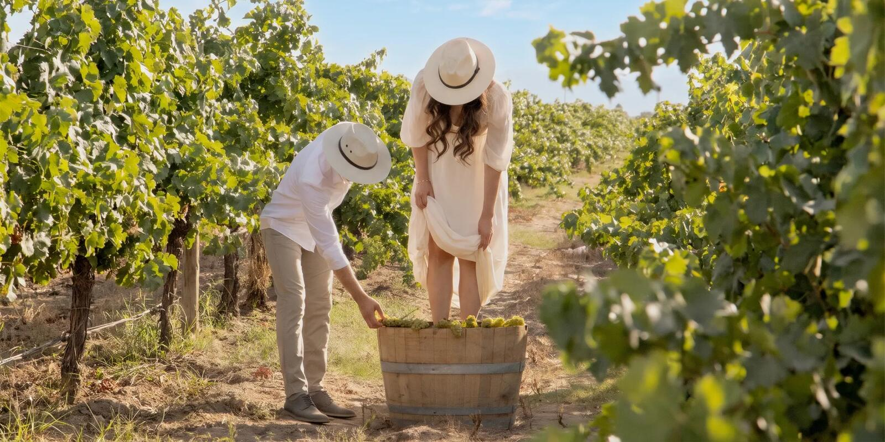
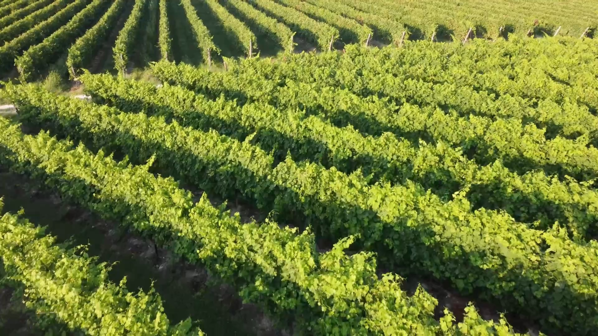
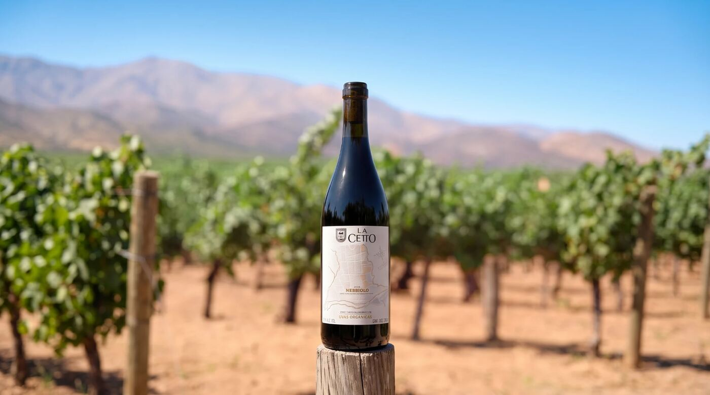
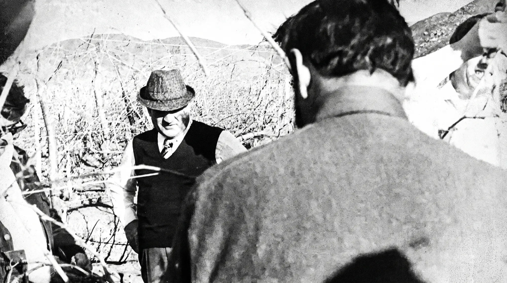
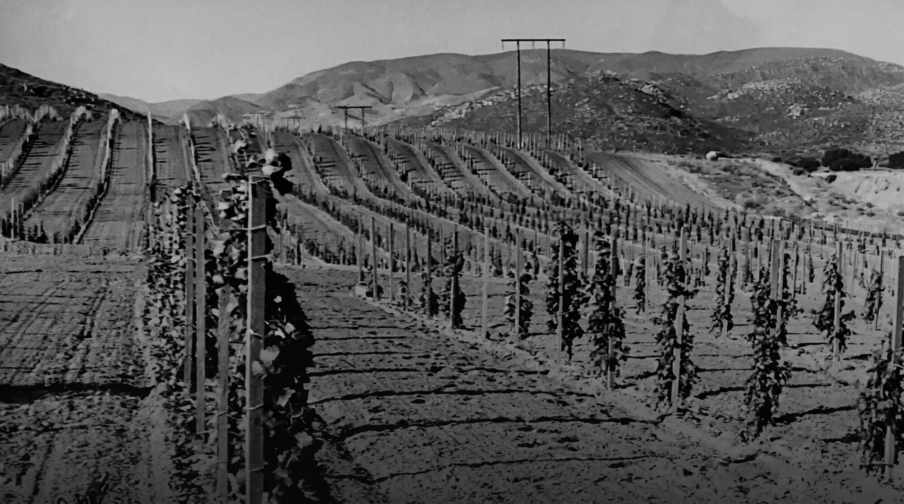
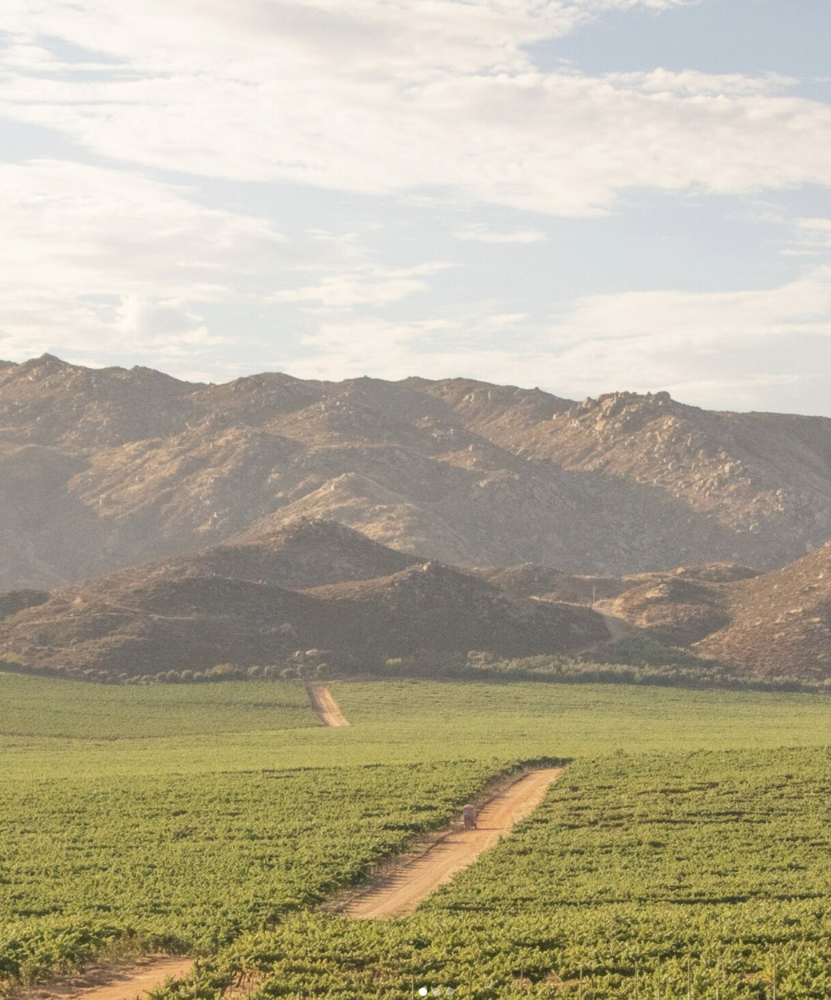
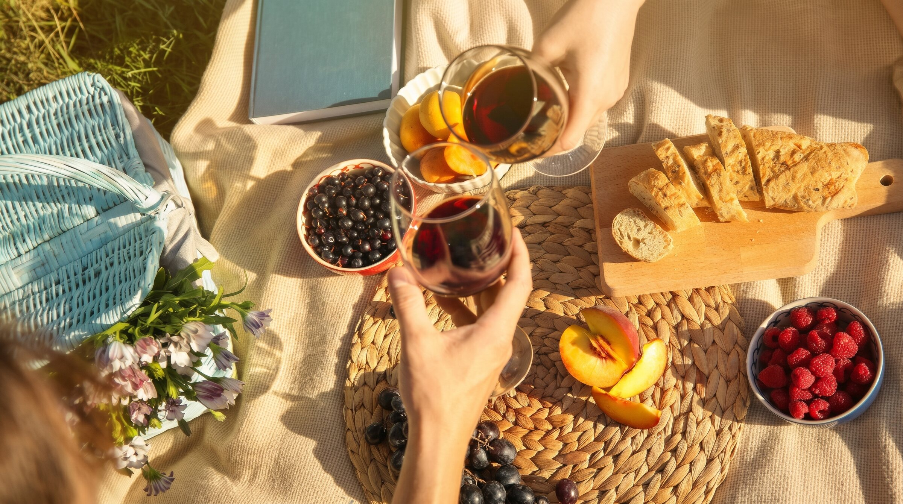

Trento combina influencias italianas y austriacas, rodeada de montañas. Ahí nace el hombre que daría inicio a una historia vitivinícola.




Nuestra historia · 1801 a hoy
Siete generaciones dedicadas al vino
“Con raíces en Italia y fundada en México en 1928, Cetto ha construido casi un siglo de historia vitivinícola, siendo pionera e innovadora en el país.”
Desliza para recorrerlaLa historia empieza en Selva di Levico, en las montañas de Trento, Italia. Ahí nace Francesco Antonio Cetto en 1801. En 1924 su bisnieto Ángelo cruza a México con el oficio de la familia, y en 1928 funda la bodega que hoy conocemos como L.A. Cetto.


Trajo de Trento lo que no cabe en una maleta: el oficio de hacer vino.
Selva di LevicoBaja California · 1924
Tres en Italia, cuatro en México
- Francesco Antonio CettoNace en 1801
- Francesco Alloisio CettoNace en 1822
- Luigi CettoNace en 1857
- 1924 · cruza el Atlántico
- Ángelo CettoNace en 1900 · funda L.A. Cetto en 1928
- Luis Agustín CettoNace en 1934
- Luis Alberto CettoNace en 1965
- La séptima generaciónSe incorpora en 2019
Línea del tiempo
De Trento al Valle
Alloisio Cetto aprende a trabajar el campo y a cultivar la vid. Como marca la tradición, hace vino de forma artesanal, con variedades como Pinot Grigio y Marzemino.
Con la herencia de su padre y su abuelo, Luigi Cetto cultiva cepas autóctonas como Teroldego y Marzemino en el terruño de Levico.
Ángelo trae el conocimiento y la experiencia de la vitivinicultura de Trento. Sobre esa base funda la bodega.

Fiel a la tradición de su padre, expande los viñedos en el Valle de Guadalupe y experimenta con variedades, suelos, climas y formas de plantación.

Refuerza el crecimiento de la empresa y la lleva a mercados internacionales: la marca llega a 17 países.
Con la generación más reciente de la familia se revitaliza la tradición: innovación en la producción y en la comercialización de sus vinos.

Una empresa pionera del vino mexicano, con la séptima generación lista para continuar el legado.

En el Valle, Don Luis Agustín probó suelos, climas y formas de plantar.
Valle de Guadalupe1951

Valle de Guadalupe:tierra de vino
Dónde nace el vino
El Valle de Guadalupe está en el norte de Baja California, entre la sierra y el océano Pacífico. Veranos secos y noches frescas por la brisa del mar: un clima mediterráneo, el que pide la vid.
Aquí, en la carretera Tecate–Ensenada km 73.5, está la casa de la familia y la mayor parte de sus 1,200 hectáreas de viñedo.
“De una montaña de Trento al Valle de Guadalupe: siete generaciones y un mismo oficio.”
Cien años en México en 2028
Lo que empezó en una montaña de Trento
Hoy son 1,200 hectáreas en el Valle, 90 de ellas orgánicas certificadas, y 26 varietales que llegan a más de 20 países. Diez veces, L.A. Cetto ha sido Bodega Mexicana del Año en el New York International Competition. Conoce nuestra trayectoriaConoce la Colección Premiada

La historia, en la copa
Ver todos los vinos
Visítanos en el Valle
Carretera Tecate–Ensenada km 73.5, Valle de Guadalupe, Baja California.